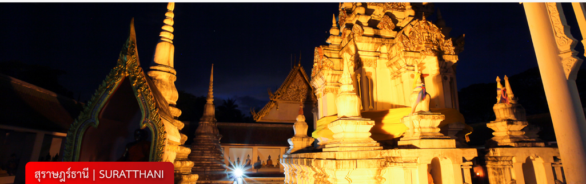
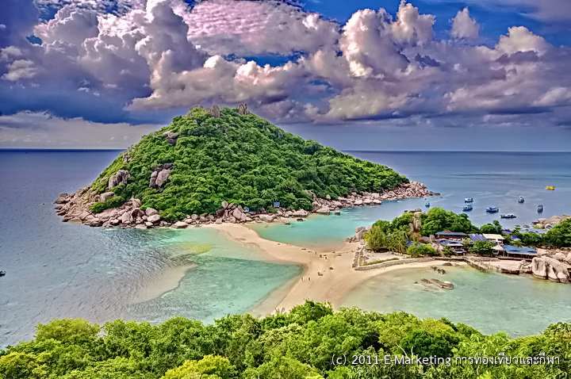
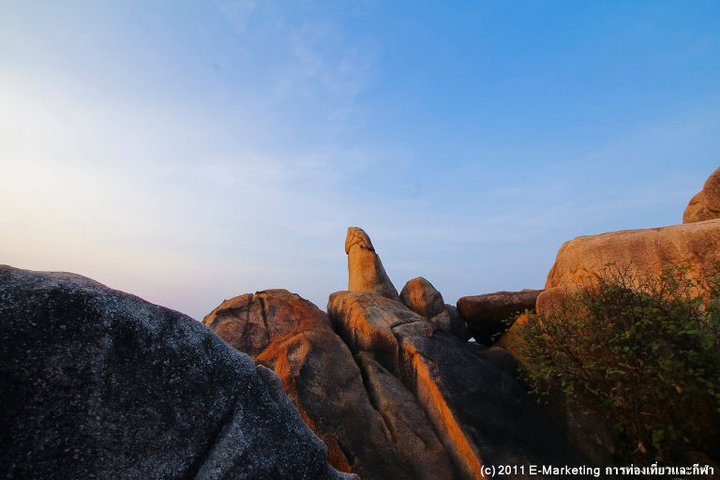
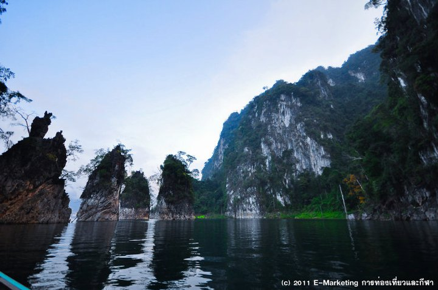

สถานที่ท่องเที่ยวในจังหวัดสุราษฎร์ธานี

รูป
ชื่อสถานที่

เกาะนางยวน
Koh Nang Yuan

หินตา หินยาย
Grand Father and Mother Rocks

กุ้ยหลินเมืองไทย อุทยานแห่งชาติเขาสก
Thailand’s Guilin (Khao Sok National Park)
ที่มา
:
bsd.nstru.ac.th
รายชื่อสมาชิกในกลุ่ม